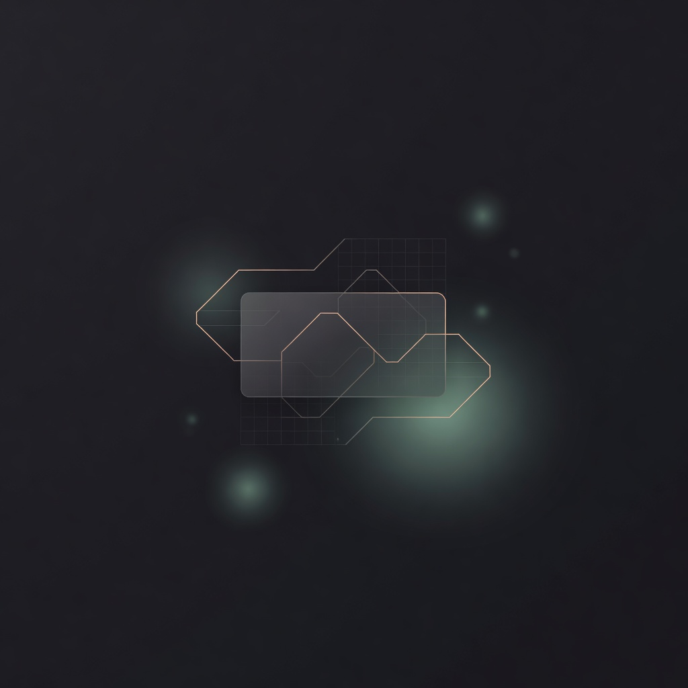

把 desktop shell 从「rail + 四栏」改成更耐看的工作台布局，按钮体系重做，别再一排 chip 了。
Direction · Copper Obsidian
扔掉左侧 icon rail，把工作台做成
「指挥栏 + 导航器 + 舞台 + 信号」
当前桌面仍是 Cursor 克隆：细 rail、会话栏、聊天、右侧 tab 一锅粥，按钮全是幽灵 chip。 v3 强制换信息架构：顶部命令条接管全局操作；左侧变成统一导航（Sessions / Files）； 中间是干净舞台；右侧只放执行信号。Composer 是主操作台，不再塞一排看不清的小按钮。
No permanent icon rail
Button hierarchy: primary / secondary / ghost / icon
Copper accent, not generic AI blue
Composer = one send action
Signal panel only when useful
Outfit + IBM Plex Mono

piwin
piwin
/
apps/desktop
/
shell rewrite
Search sessions, files, commands
⌘K
Host ready
Running
Editing shell layout · step 2 of 4
收到。我会先锁定信息架构，再动视觉。目标是：
- 顶部命令栏接管全局动作
- 左侧统一导航：Sessions / Files
- 中间舞台专注对话与产物
- 右侧只显示执行信号与变更
✓
read apps/desktop/src/styles/shell.css
42ms
✓
read apps/desktop/src/composer-dock.tsx
31ms
…
edit docs/ui-prototype-v3.html
running
/* kill permanent icon rail */ .app-shell { display: grid; grid-template-columns: var(--nav-w) 1fr var(--signal-w); grid-template-rows: 52px 1fr; }
Continue with the signal panel microcopy… |
piwin
piwin/new session
Search or jump… ⌘K
Host ready
Start a private run
Composer 是主入口。不要把「打开项目 / 选模型 / 一堆工具」平铺成垃圾按钮墙。
Describe the task… |
piwin
Review/3 files changed
@@ layout workbench @@
- grid-template-columns: rail sidebar main inspector;
+ grid-template-columns: navigator stage signal;
+ grid-template-rows: topbar 1fr;
/* button hierarchy */
- .btn { border-radius: 999px; opacity: .7; }
+ .btn-primary { solid copper, single source of truth }
+ .btn-secondary { quiet outline }
+ .btn-ghost / .btn-icon { no border clutter }
piwin
Focus mode/shell rewrite
Esc 退出 · ⌘B 导航 · ⌘J 信号面板
Focus 模式不是又加一排按钮，而是减法：砍掉导航与信号，只留对话与 composer。
需要时用快捷键召回面板，而不是永远把屏幕切成四条咸菜。
Keep going…
1. 布局必须变
旧：rail | sessions | chat | right tabs。新：topbar + navigator + stage + signal。Icon rail 删除；Files 与 Sessions 用分段控件共面，不再左右各开一个永久栏。
2. 按钮终于像按钮
primary 铜金实心、secondary 描边、ghost 文本、icon 34×34 统一命中区。Send 单独成 btn-send，禁止再混在 chip 海里。
3. 视觉方向 + 生成图
Copper Obsidian：暖墨底 + 铜强调 + sage 次强调。字体 Outfit / IBM Plex Mono。已嵌入 imageGen 资产：品牌标、空状态插画、舞台氛围底图（docs/ui-prototype-v3/assets/*.jpg）。